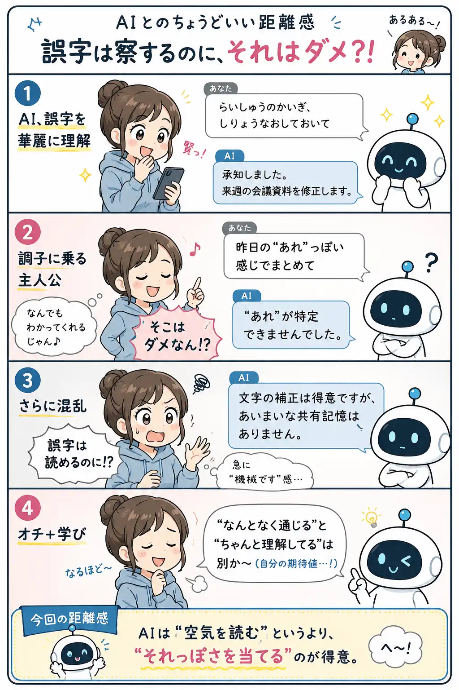

#009
誤字は察するのに、それはダメ？！
「それくらいわかるなら、こっちも察してよ」と思う日がある。

メモ
AIに雑に打った文章を投げると、けっこう誤字をいい感じに読み替えてくれます。
「明日の海淵」みたいな謎ワードでも、流れから「明日の会議ですね」と直してくれる。すごい。そこは本当に助かる。
なのに、こっちが「例の件、いい感じにまとめて」と言うと、急に知らない方向へ走り出すことがあります。「さっき誤字は察したじゃん。そこは察しないの？」となる。
へ〜と思うのは、誤字補正と文脈理解は似ているようで別ものなこと。文字の間違いは前後の言葉から推測しやすいけれど、「例の件」が何で、誰向けで、どこまで言っていいかは、AIの中に自動では入っていません。
なので、AIが誤字を察してくれるからといって、事情まで察してくれるとは限らない。そこだけ人間が少し足してあげると、急に話が通じやすくなります。
今回の距離感
誤字は雑でも意外と平気。でも「誰に」「何のために」「どの前提で」は、ひと言添えるくらいがちょうどいいかもしれません。